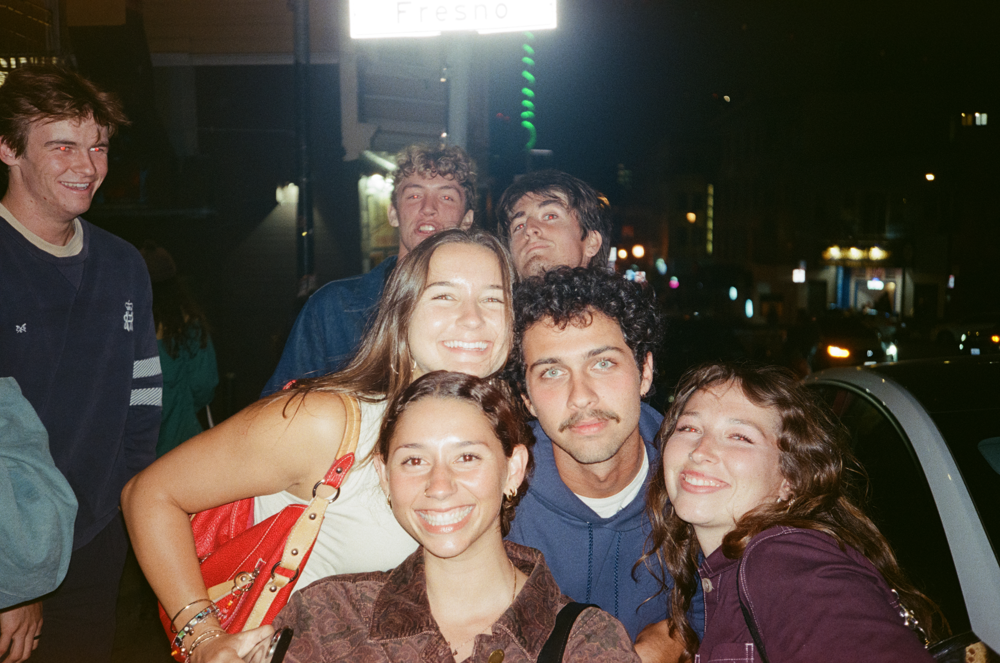

Welcome! A bit about me:
I am a 2nd year MSI student on the User Experience Research and Design Pathway.
My favorite hobbies include water polo, hiking, baking, and gardening.
A favorite spot in Ann Arbor of mine is Biercamp for cider and hotdogs!

I am a 2nd year MSI student on the User Experience Research and Design Pathway.
My favorite hobbies include water polo, hiking, baking, and gardening.
A favorite spot in Ann Arbor of mine is Biercamp for cider and hotdogs!